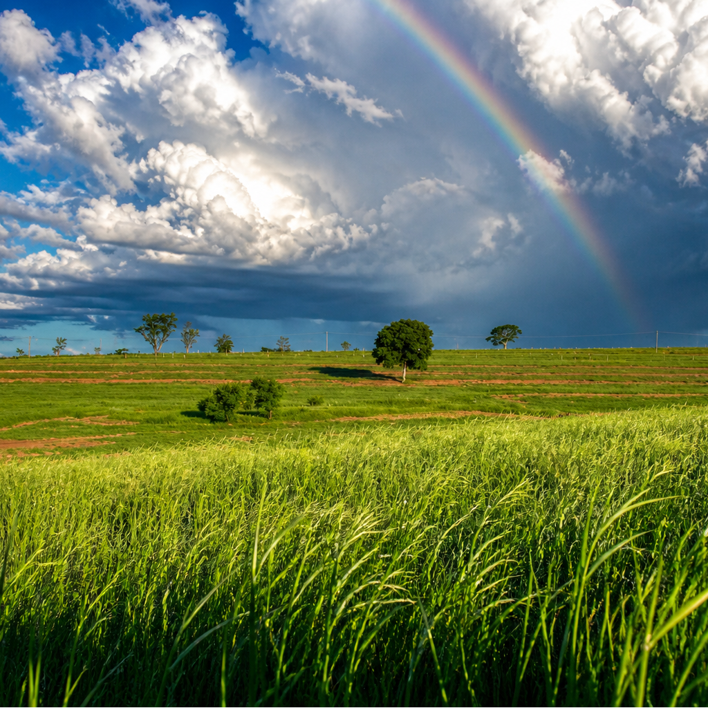
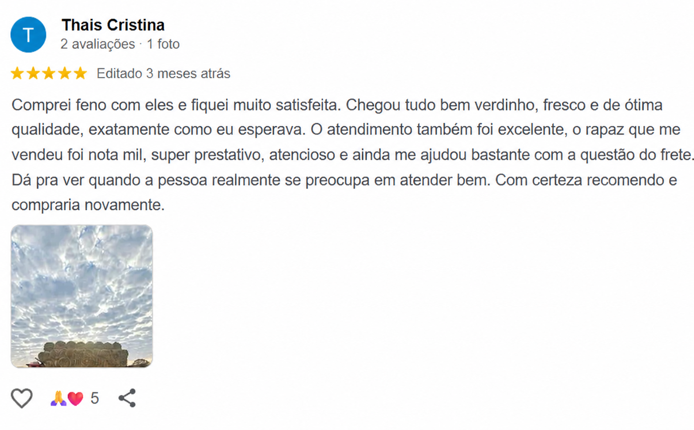

Tipo A
Tipo AAlta performance
Feno Premium Tipo A
Folhas finas, alta digestibilidade e cor verde intensa. Nutrição superior para cavalos de prova e alto rendimento.
Solicitar cotação
Venda de feno Tipo A, B e C, com produção própria e alto padrão de qualidade para cavalos e gado em Santo Anastácio - SP e região. Retirada no local ou frete negociado por conta do comprador.

Com mais de uma década de dedicação ao agronegócio, o Grupo Gonçalves consolidou-se como fornecedor de feno em Santo Anastácio - SP e região, com produção e comercialização de feno de alta performance. Nossa trajetória é marcada pela união estratégica entre a tradição das raízes familiares e o investimento constante em processos tecnológicos de ponta.
Dominamos o ciclo completo de produção em Santo Anastácio: desde o preparo técnico do solo e o plantio selecionado, até a colheita mecanizada e a logística de carregamento. Cada etapa é rigorosamente monitorada para garantir a padronização, a pureza e o valor nutricional superior que o seu rebanho exige.
Confira nossa galeria e acompanhe o rigor técnico que transforma o trabalho local em resultados reais para pecuaristas de Santo Anastácio - SP e região.


Venda de feno em fardos Tipo A, B e C para Santo Anastácio - SP e região, com qualidade selecionada, fornecimento confiável e atendimento direto com quem entende do campo.
Tipo AAlta performance
Folhas finas, alta digestibilidade e cor verde intensa. Nutrição superior para cavalos de prova e alto rendimento.
Solicitar cotaçãoTipo BEquilíbrio e rendimento
Equilíbrio ideal entre fibra e proteína. Fardos de feno padronizados com excelente aceitação para gado de corte e leite.
Solicitar cotação Tipo C
Tipo CMelhor custo-benefício
Ideal para manutenção de volume e períodos de seca. Uma solução eficiente para grandes rebanhos e suplementação.
Solicitar cotaçãoControle de origem e qualidade em todas as etapas do cultivo.
Processos monitorados para preservar pureza e valor nutricional.
Regularidade de fornecimento para dar segurança à sua operação.
Logística preparada para atender produtores de Santo Anastácio - SP e cidades da região.
A confiança de produtores de Santo Anastácio - SP e região que precisam de qualidade e previsibilidade todos os dias.

Não encontrou sua dúvida? Nossa equipe em Santo Anastácio responde rapidamente pelo WhatsApp.
Falar com a equipe localEles atendem objetivos distintos de desempenho, composição e custo-benefício. Nossa equipe indica a melhor opção conforme o perfil do seu rebanho.
Os fardos de feno podem ser retirados em Santo Anastácio - SP ou enviados para cidades da região, com frete negociado por conta do comprador, conforme o destino e a disponibilidade logística.
Entre em contato pelo WhatsApp, informe o tipo ou finalidade do feno, a quantidade desejada e sua cidade para receber uma cotação personalizada.
Sim. A produção própria permite acompanhar o ciclo completo e manter maior controle sobre origem, padronização e qualidade.
Nossa equipe oferece atendimento consultivo. Conte-nos a espécie, finalidade e rotina de alimentação para avaliarmos a opção mais adequada.
Converse com nossa equipe e receba uma cotação personalizada de feno para cavalos e gado em Santo Anastácio e região.